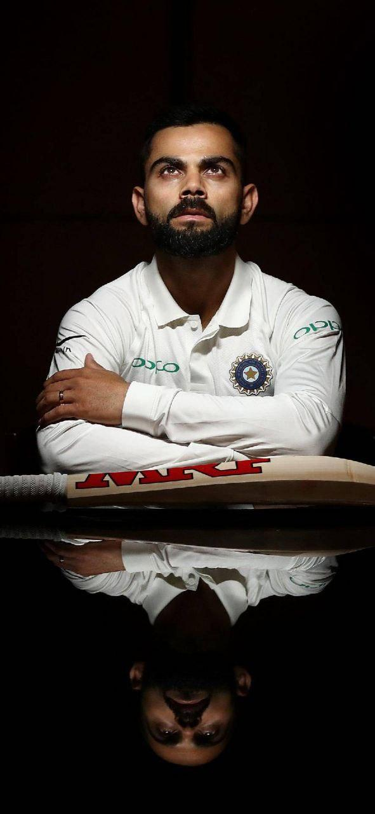
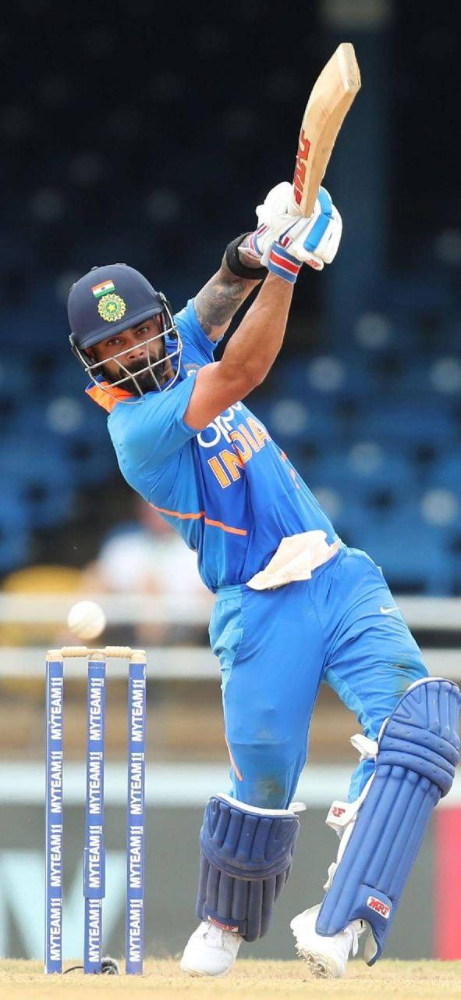

Profile
A spunky, chubby teenager with gelled hair shot to fame after leading India to glory in the Under-19 World Cup at Kuala Lumpur in early 2008. In an Indian team filled with saint-like icons worthy of their own hagiographies, Virat Kohli, with his most un-Indian, 'bad-boy' intensity, would clearly be an outcast.

King Kohil.
The selectors had no choice but to give Kohli another go in the Indian side, and this time he strung together a number of impressive scores. After being given an extended run, he repaid their faith by notching up his maiden ODI hundred in an impressive run-chase against Sri Lanka in December 2009 - his first of many exemplary knocks in run-chases. In the World Cup final of 2011, the biggest stage of them all, Kohli, along with his Delhi teammate Gautam Gambhir, pulled off a largely underrated rescue effort with an 83-run stand after losing the openers early. This knock played a crucial role in setting the platform for MS Dhoni's fabled knock of 91*, which eventually won India the World Cup on that enchanting evening in Mumbai.

Virat Kohli
He soon joined the senior Men in Blue in Sri Lanka, come August 2008. In the absence of the regular openers, Virat Kohli was given a chance to open the batting in the ODI series. He played some commendable knocks in his extended run as an opener, as India went on to win the ODI series. However, the established and formidable pair of Tendulkar and Sehwag kept Kohli out of the team